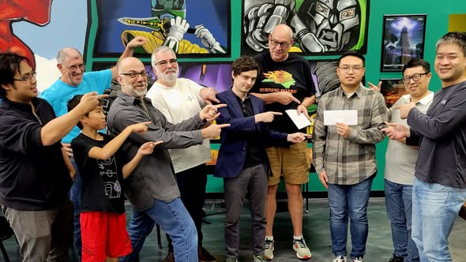

About
I'm Bowei Xu, a business systems and backend engineer based in College Station, Texas, with 3+ years of experience independently designing and shipping enterprise-grade business systems. At Fuel Cell Store I'm the sole developer behind the internal operations platform that runs the business: order management, warehouse operations (WMS), and shop-floor production execution (MES). It's a 50+ table database schema and 100,000+ line codebase translating real manufacturing and operations requirements into production software.
I work end to end: database design, backend APIs, responsive interfaces, and the operational dashboards that tie them together. I lean on modern AI-assisted development workflows to ship faster without giving up engineering judgment or code review.
What I'm Looking For
Open to backend, platform, and full-stack engineering roles. I'm at my best owning systems end to end and turning messy operational problems into reliable software.
Education
University of Southern California
M.S. in Computer Science · Los Angeles, CA · 2020-2022
Henan University
B.Eng. in Computer Science and Technology · Kaifeng, China · 2016-2020
Beyond Code
Outside of work I'm a competitive Go player: AGA 6-dan, Chinese 5-dan, two-time champion of the Houston Go Tournament, and a certified national referee (China, Level 2). In 2023 I ranked 2nd in the U.S. among players with ten or more AGA-rated games, at 13 wins and 1 loss.

- AGA profile (ID 30045)
- American Go Association, Nov 2025: "Houston Fall Go Tournament Ends in Dramatic Tie at the Top"
- Baduk News, 2025 U.S. win ratio ranking: tied for 11th nationally, 66.7% (10 wins, 5 losses)
- Houston Go Club, Nov 2023: Fall 2023 Tournament, Overall (High Dan) winner
- Baduk News, 2023 U.S. win ratio ranking: 2nd nationally, 13 wins and 1 loss